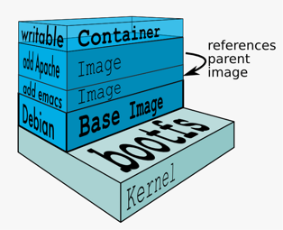
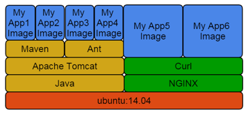
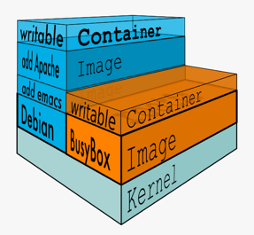
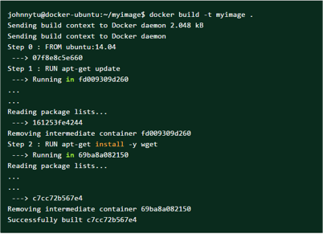
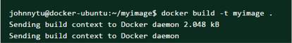
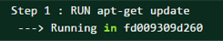
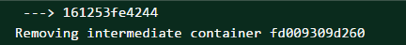
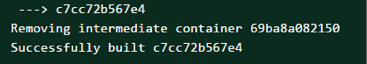

Images are composed of a stack of read-only layers.
Each stack begins with a base image.
Copy on write strategy shares layers between images and containers to optimise performance.

Sharing Layers

Images can share layers in order to speed up transfer times and optimize disk and memory usage.
Parent images that already exists on the host do not have to be downloaded.
The Writable Container Layer
`docker run` creates a top writable layer for containers.
Parent images are read only.
All changes are made at the writeable layer.
When changing a file from a read only layer, the copy on write system will copy the file into the writable layer.

Creating Images
There are three methods by which an image can be created:
Commit the R/W container layer as a new RO image layer.
Define new layers to add to a starting image in a Dockerfile.
Import a tarball into Docker as a standalone base layer
Committing Container Changes
Allows us to build images interactively, via terminal access to a running container.
Once satisfied with the state of a running container, the `docker commit` command saves the R/W layer as a new RO image layer, thus creating a new image.
Scenario: Creating Images with Dockerfiles (steps 1-3)
Build Output

Build Context

The build context is the directory that the Docker client sends to the Docker daemon during the docker build command.
Directory is sent as an archive.
Docker daemon will build using the files available in the context.
Specifying “.” for the build context means to use the current directory.
Examining the Build Process
Each command after the `FROM` command launches a new container based on the image thusfar, and executes in that container:

At the end of each command, the resulting container's read-write layer is committed as a new image layer, and the container is deleted:

This is repeated for all commands in the Dockerfile; when the final command is complete, the resulting image is returned with the name and tag specified in the docker build command:

Note that the only thing persisted between commands are things written to the filesystem - NOT state like filesystem position or running processes!
Examining the Build Process
This:
RUN cd /src
RUN bash setup.sh
is different than this:
RUN cd /src && bash setup.sh
because every Dockerfile command runs in a different container, and only the filesystem, not the in-memory state, is persisted from layer to layer.
Build Cache
Docker saves a snapshot of the image after each build step.
Before executing a step, Docker checks to see if it has already run that build sequence previously.
If yes, Docker will use the result of that instead of executing the instruction again.
Docker uses exact strings in your Dockerfile to compare with the cache; simply changing the order of instructions will invalidate the cache.
 Task: Interactive Image Creation
Task: Interactive Image Creation